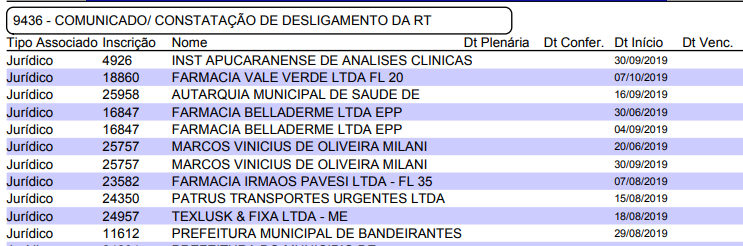

Caso esteja correto:
No protocolo, Aba dados da firma, Responsável técnico, Salvar alteração do contrato.
Clicar em Evolução.
Local: 101 (Cadastro Baixa RT Web)
Situação: 16 (Deferido Baixa RT Web)
Julgamento: 31 (Efetivado Baixa RT Web).
Fazer download dos arquivos e do protocolo e migrar para o GED (No GED renomear Baixa de RT web + data protocolo formato AAAA_MM_DD)
Abrir o cadastro da empresa para verificar situação do estabelecimento:
Evolução do Protocolo pós ofício:
Local da Evolução: 8 – cadastro
Situação: 19 – oficiado
Julgamento: 21 - arquivamento do procedimento
Parecer:
Local da Evolução * 8 - cadastro
Situação * 10 - encaminhado
Julgamento * 28 - para análise dep. Ética
Local Encaminhar * 11 - ética
Parecer:
Local da Evolução * 8 - cadastro
Situação * 10 - encaminhado
Julgamento * 28 - para análise dep. Ética
Local Encaminhar * 11 - ética
Parecer:
No protocolo, inicialmente alterar o campo “Dados do Protocolo”, acima das informações padrão, incluir ***DESISTÊNCIA DE RT***;
Clicar em Evolução.
Local: 101 (Cadastro Baixa RT Web)
Situação: 16 (Deferido Baixa RT Web)
Julgamento: 31 (Efetivado Baixa RT Web)
Parecer:
Fazer download dos arquivos e do protocolo e migrar para o GED (No GED renomear Desistência de RT web + data protocolo formato AAAA_MM_DD)
Abrir o cadastro da empresa para verificar situação do estabelecimento considerando DESISTÊNCIA:
No protocolo, clicar em alterar para incluir a inscrição da empresa.
Clicar em Evolução.
Local: 8 (Cadastro) / Situação: 4 (Arquivado) / Julgamento: 21 (Arquivamento do procedimento)
Parecer:
Salvar protocolo. Não há necessidade de fazer download do arquivo e do protocolo e migrar para o GED
No protocolo, Clicar em Evolução:
Se faltar documento:
Local: 101 (Cadastro Baixa RT Web) / Situação: 25 (Falta Documento Baixa RT Web) / Julgamento: 18 (Solicitação ao Requerente) / Local Encaminhamento: 32 (CRF-PR EM CASA)
Parecer:
Abrir protocolo e visualizar arquivo.
No protocolo, Aba dados da firma, Responsável técnico, Salvar alteração do contrato.
Clicar em Evolução.
Local: 101 (Cadastro Baixa RT Web) / Situação: 13 (Informado ao Requerente falta de documento) / Julgamento: 31 (Efetivado Baixa RT Web).
Parecer:
Fazer download dos arquivos e do protocolo e migrar para o GED (No GED renomear Baixa de RT web + data protocolo formato AAAA_MM_DD)
Abrir o cadastro da PROFISSIONAL e incluir status 9451 - BAIXA DE RT COM DOCUMENTAÇÃO PENDENTE:
Colocar data de início = data do protocolo / data fim o prazo de 30 dias para programação de encaminhamento para ÉTICA caso o profissional não apresente os documentos faltantes no prazo e não justifique.
Abrir protocolo para cancelamento da ocorrência da BRT:
Local: 101 (Cadastro Baixa RT Web) / Situação: 17 (Indeferido por extrapolar o prazo) / Julgamento: 32 (Indeferido requerimento de baixa de RT).
Parecer:
Fazer download dos arquivos e do protocolo e migrar para o GED. (No GED renomear Indeferimento de Baixa de RT web + data protocolo formato AAAA_MM_DD)
Abrir cadastro do estabelecimento para verificação da situação:
Incluir status 9436 - COMUNICADO/ CONSTATAÇÃO DE DESLIGAMENTO DA RT:
Colocar data de início = data do desligamento / data fim o prazo de 30 dias para programação de notificação ao estabelecimento caso o profissional não regularize a baixa e o estabelecimento fique irregular sem o profissional.
Selecionar Menu Sagicon: / Status; / Relatório / Manutenção de Status; / Tipo de relatório Firma; / incluir status 9436; / Pesquisar; / Visualizar. / Verificar os estabelecimentos com Data Vencimento próxima para notificar a empresa adequar assistência, caso o profissional ainda não tenha regularizado a baixa da RT.

Oficiar (AR) o estabelecimento DROGARIA SJS LTDA, tendo em vista o protocolo nº 28564, de baixa da responsabilidade técnica via web do(a) profissional DESIREE NASCIMENTO, na condição de diretora técnica desse estabelecimento, informamos que embora a baixa não tenha sido efetivada por questões documentais, considerando a informação de que não trabalha mais nesse estabelecimento desde 12.01.2020, ficando sem assistência de farmacêutico habilitado para o horário de segunda a sábado das 09 às 12h e 13 as 16h, fica o estabelecimento notificado a regularizar a assistência farmacêutica para todo horário de funcionamento, na forma do art. 24 da Lei 3.820/60 combinado com art. 15 da Lei Federal 5.991/73 e Lei 13.021/2014, sob a pena autuações e multas na constatação da ausência do(a) referido(a) farmacêutico(a), a partir da ciência do ofício, conforme previsto a Resolução 648/2017 do Conselho Federal de Farmácia.
No protocolo, clicar em alterar para incluir a inscrição da empresa, se for possível a identificação.
Clicar em Evolução.
Local: 8 (Cadastro) / Situação: 4 (Arquivado) / Julgamento: 3 (Indeferido).
Parecer:
Salvar protocolo. Fazer download do arquivo e do protocolo e migrar para o GED. (No GED renomear Indeferimento comunicado de desligamento web + data protocolo formato AAAA_MM_DD)
Abrir o cadastro da empresa e incluir status 9436 - COMUNICADO/ CONSTATAÇÃO DE DESLIGAMENTO DA RT:
Colocar data de início = data do desligamento / data fim o prazo de 30 dias para programação de notificação ao estabelecimento caso o profissional não regularize a baixa e o estabelecimento fique irregular sem o profissional.
Envio de documentos não relacionados a baixa de RT: Clicar em Evolução. Local: 8 (Cadastro) / Situação: 4 (Arquivado) / Julgamento: 3 (Indeferido).
Parecer:
Parecer: